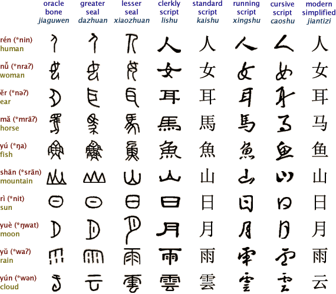
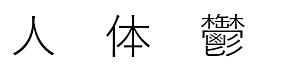
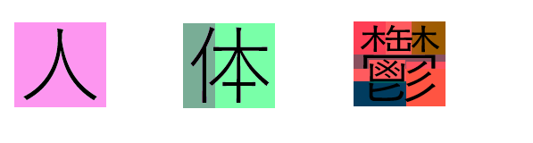
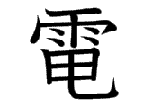
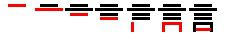
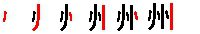
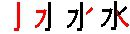
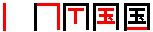
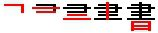
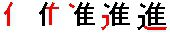

கான்ஜி சித்திர எழுத்து வடிவங்களுள் ஏன் சில எளிமையானதாகவும், சில கடினமானதாகவும் இருக்கிறது என்ற கேள்வி உங்களுக்கு எழுந்துள்ளதா? இதற்கு இந்த சீன ஹான்சி சித்திர எழுத்து வடிவத்தின் வளர்ச்சி, இவை எதிலெதிலெல்லாம் எழுதப்பட்டன, இவற்றின் வடிவ வகைப்பாடுகள் எவை, கான்ஜியின் கீறல்கள் மற்றும் கூறுகள் என்றால் என்ன? என்பவற்றை புரிந்து கொள்ள வேண்டும், பின் முதல் கேள்வியின் முடிச்சுகள் தானாக அவிழும். அதன் பொருட்டு எழுதப்பட்ட கட்டுரை இது.
ஹான்சி சித்திர வரிவடிவ வரலாறு:
சீன ஹான்சி சித்திர எழுத்து வடிவம் மிக நீண்ட வரலாற்றைக் கொண்டது, சுமார் 3500 ஆண்டுகளுக்கு முன் சீன மக்களால் முதலில் கீறி/வரைந்து/எழுதி துவங்கப்பட்டது என அறிஞர்கள் எண்ணுகின்றனர். ஆரம்ப காலத்தில் பெரிய விலங்குகளின் தோள்பட்டை எலும்பு அல்லது ஆமையின் ஓட்டில் கூர்மையான ஆயுதம் கொண்டு கீறப்பட்ட சித்திர வடிவங்களாக இவை இருந்தன, பின்னர் செம்பு பொருட்களில் எழுத்தாணி கொண்டு வரையப்பட்டன, பின்னர் சற்று அதிக அளவில் செம்பு பாத்திரங்களில் இந்த சித்திர எழுத்துக்கள் பொறிக்கப்பட்டன, அதன் பிறகு சிறிய அளவிலான இந்த எழுத்துக்கள் தூரிகை மற்றும் மை கொண்டு, மூங்கில் அல்லது மரப் பலகைகளில் எழுதப்பட்டு வந்தன. இறுதியாக கி.பி ஒன்றாம் நூற்றாண்டில் சீனாவில் காகிதம் கண்டுபிடிக்கப்பட்ட பின் இந்த சித்திர வரிவடிவங்கள், அன்றாட கணக்குக் குறிப்புகள், அரசாங்க அலுவல் குறிப்புகள், பொது அல்லது தனிநபர் ஆவணங்கள் என பலவகையில் எழுதப்பட்டு இதன் பயன்பாட்டில் ஒரு பெரிய பாய்ச்சல் நிகழந்தது. பெரும்பாலும் தூரிக்கைகள் கொண்டு எழுதப்பட்டதால் கலை ரீதியாகவும் இது பார்க்கப்பட்டது.
இவ்வாறு பல்வேறு காலகட்டங்களில் பல்வேறு பொருட்களில் எழுதப்பட்டு, சீர் படுத்தப்பட்டு இன்றைக்கு இருக்கும் வடிவத்தை அடைந்திருக்கிறது. இந்த படிநிலை வளர்ச்சியை கீழ்க்கண்ட படத்தின் மூலம் இன்னும் எளிமையாக புரிந்துகொள்ளலாம்.

ஹான்சி – உருவாக்கம்:
இது ஒருபுறம் இருக்க இதன் வடிவச்சிக்கலை சற்று புரிந்துகொள்வோம். ஒருசில காஞ்சிக்கள் பார்க்க மிகவும் எளிமையானதாகவும், வேறுசில கான்ஜிக்கள் ஒன்றுக்கும் மேற்ப்பட்ட கான்ஜிக்களால் ஒரு சதுர எல்லைக்குள் நெருக்கி எழுதப்பட்டு பார்க்க, படிக்க, எழுத, புரிந்துகொள்ள கடினமாக இருப்பதாகவும் தோன்றும்.

இந்த வரிவடிவங்கள் உண்டாக்கப்பட்டதன் பின்னனியில் இருக்கும் மொழியியல் மற்றும் உலவியல் காரணிகளை புரிந்துகொள்ள வேண்டும். சீனர்கள் ஆரம்ப காலத்தில் இயற்கையாகிய மலை, காடு, மரம், கதிரவன், நிலவு, ஆறு, கடல் போன்றவற்றை எழுதிய எண்ணியபோது தான் கண்ணில் கண்டதை அப்படியே வரைந்துகொண்டனர், எனவே அவ்வடிவங்கள் எளிமையாக இருந்தன.
பின்னர் மேலே, கீழே, வலது, இடது என்பன போன்ற கருதுகோள்களை எழுத எண்ணியபோது சற்று சிந்தித்து குறியீடுகளாக வரைந்தனர், பார்த்தவுடன் புரியாவிட்டாலும் சற்று யோசித்தால் இவை புரிந்துவிடும்படி இருந்தன.
காலப்போக்கில் புதிய சொற்கள் உண்டாகின, இவ்வாறு உண்டாகையில் ஒவ்வொரு சொல்லுக்கும்/கருதுகோளுக்கும் ஒரு வடிவம் வரைவது என்பது சாத்தியமில்லாமல் போனது, மேலும் கண்ணில் காணாத ஒரு கருதுகோளை எப்படி வரைவது? எனினும் அவற்றிற்கும் ஒரு ஹான்சி வரிவடிவம் கொடுக்கத்தானே வேண்டும்? இவ்வாறான சமயங்களில் ஒன்றிற்கும் மேற்ப்பட்ட ஹான்சிக்களை அதன் பொருளுக்காக தேர்வு செய்து நெருக்கி எழுதி புதிய ஹான்சிக்கள் உருவாக்கப்பட்டன. இதில் இருக்கும் ஒவ்வொரு ஹான்சியும், கூறுகள் (Components) என்றழைக்கப்படுகின்றன. சிக்கலான கருதுக்கோள்கள் இவ்வாறு கான்ஜி கூறுகளைக் கொண்டு எழுதுகையில் நினைவில் கொள்ளக் கூடியதாக இருந்தன, மேலும் இவற்றைப் படைப்பதில் ஒரு கற்பனை திறனும் இருந்தது.

இவற்றுள் ஒரு சில கூறுகள் அந்த முழு ஹான்சியின் பொருள் குறித்த அடையாளத்திற்காகவும், வேறுசில கூறுகள் அந்த ஹான்சியின் உச்சரிப்பு குறித்த அடையாளத்திற்காகவும் நெருக்கி ஒருங்கே எழுதப்பட்டன. ஒரு கட்டத்திற்கு மேல் இப்படி ஹான்சி கூறுகளை வைத்து முழு ஹான்சி எழுதுவதும் சிரமமாகப் போகவே, இரண்டு கான்ஜிக்களைச் சேர்த்து எழுதி புதிய சொற்கள் படைக்கப்பட்டன. இது ஹான்சி வரலாற்றில் அண்மையில் நிகழ்ந்தது எனலாம்.
சீன மொழியில் லட்சங்களில் வார்த்தைகள் உள்ளன என வைத்துக் கொண்டால் ஒவ்வொரு சொல்லுக்கும் ஒரு தனி ஹான்சி சித்திர வடிவம் உண்டு பண்ணுவது என்பது சாத்தியமற்றது, ஒருவேளை அப்படி உண்டுபண்ணியிருந்தாலும் அவற்றை நினைவில் கொள்வது என்பது நிச்சயம் சாத்தியமற்றது.
எனவேதான் வேரச்சொற்கள் எளிமையான ஹான்சியாகவும், பின் வந்த சொற்கள் ஏற்கனவே இருக்கும் ஹான்சிக்களைக் கூறுகளாகக் கொண்ட வேறொரு ஹான்சியாகவும், அதன் பின் வந்த நவீன கலைச்சொற்கள் ஒன்றுக்கும் மேற்ப்பட்ட ஹான்சிக்களை அடுத்தடுத்து எழுதி கூட்டு ஹான்சி சொற்களாகவும் உண்டாக்கப்பட்டன. இவை ஒருவகையில் சொல்-பொருள்-உச்சரிப்பு குறித்த சிக்கல்கள் ஏழாமலும், கான்ஜிக்களை நினைவில் வைத்துக்கொள்ள ஏதுவாகவும் அமைந்தன. மேலும் நினைவில் வைத்துக்கொள்ள கடினமாக இருந்த ஹான்சிக்கள்/கான்ஜிக்கள் 20ம் நூற்றாண்டில் சீனா/யப்பான் நாடுகளில் முறையே அரசுகளால் எளிமையாகவும், சீர்மையாகவும் ஆக்கப்பட்டன.
துவக்கத்தில் சீன மொழிக்கு சற்றும் தொடர்பில்லாத யப்பானியர்களுக்கு இவை கடினமாகத்தான் இருந்தன, எனினும் காலப்போக்கில் தங்கள் மொழிக்கு ஏற்ப திறம்பட பொருத்திக்கொண்டனர். ஆதலால் யப்பானிய மொழியின் இலக்கணத்தில் பல ஒற்றுமைகளைக் கொண்ட திராவிட மொழிக் குடும்பத்தைச் சார்ந்த நாமும் இந்த கான்ஜிக்களை கற்றுக்கொள்ளவது என்பது முடியாத காரியமில்லை.
கான்ஜியின் வடிவ வகைப்பாடு:
யப்பானியர்கள் கான்ஜியின் வடிவ மற்றும் ஆக்கத்தை பொருத்து அதை 6 வகைகளாகக் கொண்டுள்ளனர். அவற்றுள் 4 மெரும்பான்மை; 2 சிறுபான்மை. அவற்றின் பெயர் மற்றும் தமிழ் மொழிபெயர்ப்பு கீழே.
- 象形文字 (shōkei moji) – உருவக் குறியீடு
- 指事文字 (shiji moji) – சிந்தனைக் குறியீடு
- 会意文字 (kaii moji) – சிந்தனைக் கூட்டுக் குறியீடு
- 形声文字 (keisei moji) – உச்சரிப்புக் கூட்டுக் குறியீடு
- 転注文字 (tenchū moji) – பொருள் திரிந்தக் குறியீடு
- 仮借文字 (kasha moji) – ஒலிக்கடன் குறியீடு
象形文字 (しょうけい文字) - Pictographic - உருவக் குறியீடு:
துவக்க காலத்தில் ஒரு பொருளைப் பார்த்து அதன் உருவத்தை அப்படியே வரைந்து உபயோகப்படுத்தபட்ட கான்ஜி வடிவங்கள் இவை. எடுத்துக்காட்டாக, “மலை”, “மரம்”, “மனிதன்” போன்றவற்றின் உருவத்தை நினைவூட்டும் எழுத்துகள். காலப்போக்கில் இவை திரிந்து எளிமையாகி இப்போது இருக்கும் கான்ஜி வடிவத்தை அடைந்துள்ளன.
指事文字 (しじ文字) - Ideographic – சிந்தனைக் குறியீடு:
கண்ணுக்கு புலப்படாத கருதுகோல்களை குறிக்கும் வகையில் சிந்தித்து வரையப்பட்ட கான்ஜி வடிவங்கள் இவை. எடுத்துக்காட்டாக, “மேல்”, “கீழ்”, “நடு” போன்ற கருதுகோல்களை சுட்டிக்காட்டும் வடிவங்களைச் சொல்லலாம்.
会意文字 (かいい文字) - Ideographic Compound - சிந்தனைக் கூட்டுக் குறியீடு:
இரண்டு அல்லது அதற்கு மேற்பட்ட கான்ஜியின் கூறுகள் சேர்ந்து புதிய பொருளை கொடுக்கும் கான்ஜி வடிவங்கள் இவை. இந்த கூட்டுக் கான்ஜியின் புதிய பொருள் அதில் கூறுகளாக உள்ள கான்ஜிக்களின் பொருள்களைச் சார்ந்து உண்டாக்கப்பட்டிருக்கும்.
形声文字 (けいせい文字) - Phonetic Compound - உச்சரிப்புக் கூட்டுக் குறியீடு:
இந்த கூட்டுக் கான்ஜி வடிவ கூறுகளில் ஒரு பகுதி பொருளையும், இன்னொரு பகுதி உச்சரிப்பையும் சுட்டிக்காட்டி நிற்கும். இந்த வகைப்பாட்டில் உச்சரிப்பை சுட்டிக்காட்டும் தன்மையானது பெரும்பாலும் மூல சீன மொழியின் ஹான்சிக்குதான் பயனுள்ளதாக இருக்கும் என்றாலும் கொஞ்சம் கான்ஜியின் ஒன்யொமியையும் அடையாளம் கண்டுகொள்ள உதவுகிறது.
転注文字 (てんちゅう文字) - derivative cognate - பொருள் திரிந்தக் குறியீடு:
ஆரம்ப காலத்தில் ஒரு பொருள் குறித்து, பின் காலப்போக்கில் அதன் பொருள் திரிந்தோ அல்லது விரிந்தோ அமைந்த கான்ஜி வடிவங்கள் இவை. கொஞ்சம் சிக்கலான வகைப்பாடு எனினும் இந்த வகைப்பாட்டில் உள்ள கான்ஜிக்களின் எண்ணிக்கை மிகவும் குறைவு.
仮借文字 (かしゃ文字) - Phonetic - ஒலிக்கடன் குறியீடு:
ஒரு கான்ஜியை அதன் உச்சரிப்பு ஒலிக்காக மட்டும் கடன் பெற்று அதன் மூல பொருளுக்கு மாறாக வேறொரு பொருளை உணர்த்தும் வடிவங்கள் இவை. பழங்காலத்தில் இந்த கான்ஜி வடிவம் உணர்த்திய பொருளுக்கு முக்கியத்துவம் குறைந்து அதன் ஒலிப்புக்காக மட்டும் இன்று பயனில் உள்ள சொற்களின் வகைப்பாடு இவை. சென்ற வகைப்பாடு போலவே இந்த வகைப்பாட்டிலும் உள்ள கான்ஜிக்களின் எண்ணிக்கை மிகக் குறைவு.
கீறல்கள் மற்றும் கூறுகள்:
ஒரு கான்ஜியை எழுதப்பயன்படும் கோடுகளை கீறல்கள் (strokes) எனலாம். இந்த கீறல்கள் அல்லது கோடுகள் கொண்டு கான்ஜியை எழுதுகையில் நாம் ஒரு ஒழுங்கை கடைபிடிக்கவேண்டும் இந்த கோட்டிற்கு பிறகுதான் இந்த கோடு வரும் எனும் புரிதல் இருக்க வேண்டும். பெரும்பாலான கான்ஜிக்கள் 8 கக்கும் மேற்பட்ட கீறல்கள்/கோடுகளைக் கொண்டவை, எனவே நினைவில் கொள்வது சற்று சீரமம்தான் எனினும் “முயற்சி மெய்வருத்த கூலி தரும்”.

மறுபுறம் சிக்கலான கான்ஜிக்களில் இருக்கும் கான்ஜி அல்லது அதன் சுருக்கப்பட்ட வடிவங்களை கூறுகள் (Radicals) அல்லது உருபுகள் (Compunds) என்று சொல்லலாம். என்றாலும் யப்பானியர்கள் இவ்வாறான பல உருபுகள் கொண்ட கான்ஜியிலிருந்து ஒரு உருபை தேர்ந்தெடுத்து அதை கூறுகள் என்று வகைப்படுத்தியுள்ளனர். இது அகராதிகளில் கான்ஜிக்களை வரிசைப்படுத்த பயன்படுகிறது.
கீறல்கள் / கோடுகள்:
ஒவ்வொரு கான்ஜியின் கீறல்கள் அல்லது கோடுகள் முறையே “கான்ஜி குதிர்” பகுதியில் கொடுக்கப்பட்டுள்ளன, ஒரு கான்ஜி சட்டத்தையும் சொடுக்கி அதன் எழுதும் முறை மற்றும் இதர தகவல்களை அங்கேயே தெரிந்து கொள்ளலாம். எனினும் கீழ் உள்ள விதிமுறைகள் ஒரு மேம்பட்ட புரிதலைத் தரும்.
இவற்றை தூரிகை கொண்டு வனப்பெழுத்தில் எழுதி படிக்கும் போது கூடவே இன்னும் அழகாக எழுதி முடியும், வனப்பெழுத்தில் கான்ஜியை எழுதுவதே பெரும் கலைவடிவமாக யப்பானில் பார்க்கப்படுகிறது.
| விதி | கீறல் வரிசை | உதாரணம் |
|---|---|---|
| மேலிருந்து கீழே |  |
言 (சொல்) |
| இடமிருந்து வலமாக. |  |
州 (மாகாணம்) |
| செங்குத்தும் கிடைமட்டமும் இருந்தால், கிடைமட்டம் முதலில். | 十 (பத்து) | |
| இடம்–வலம்–நடு ஆகியவை இருந்தால், நடுப்பகுதி முதலில். |  |
水 (நீர்) |
| வெளியே சுற்றி உள்ளே இருந்தால், வெளியே முதலில். |  |
国 (நாடு) |
| பெட்டி வடிவத்திற்கு மூன்று கோடுகள் மட்டுமே. | 中 (உள்ளே, நடு) | |
| நடுவில் ஊடறுக்கும் செங்குத்துக் கோடு இறுதியில். |  |
書 (எழுதல், எழுத்து) |
| குறுக்கு கோடுகளில் மேல்இடம் → கீழ்வலம் கோடு முதலில். | 文 (இலக்கியம்) | |
| கொக்கு/வளைவு கோடு கடைசியாக. |  |
進 (தொடரவும்) |
கூறுகள் / உருபுகள்:
கான்ஜி கூறுகள் “漢字の部首” என்றழைக்கப்படுகிறது, முன் கூறியபடி சிக்கலான கான்ஜியானது பல உருபுகளை கொண்டிருந்தாலும் அவற்றை வரிசைப்படுத்த அவற்றிலிருந்து ஒரு உருபு தேர்ந்தெடுக்கப்பட்டு கூறு (Radical) என வழங்கப்படுகிறது. மொத்த கான்ஜியில் 214 கூறுகள் வகைப்படுத்தப்பட்டுள்ளன. எப்படி கந எழுத்துக்கள் ஆட்டவனைப்படுத்தப்பட்டுள்ளனவோ அதே போல் கான்ஜிக்களை ஆட்டவனைப்படுத்த இந்த வகைப்பாடு பயன்படுகிறது. இவை “கான்ஜி கூறுகள்” பகுதியில் கொடுக்கப்பட்டுள்ளன. ஒவ்வொரு கூறின் சட்டத்தையும் சொடுக்கி அதன் பொருள் மற்றும் அது கொண்டுள்ள இதர கான்ஜிக்களை முறையே தெரிந்து கொள்ளலாம்.
ஒரு கான்ஜியானது இன்னோரு கான்ஜியில் உறுபாக செயல்படும்போது சிலசமயம் வேறு வடிவத்தை பெற்று சுருங்கி வரும், உதாரணமாக “水” கான்ஜி “氵” என்றும், “人” கான்ஜி “亻” என்றும் எழுதப்படும். இதுவும் மேற்சொன்ன கான்ஜி கூறுகளில் கொடுக்கப்பட்டுள்ளது.
மேலும் கான்ஜியில் இந்த கூறுகள் இருக்கும் இடத்தை பொருத்தும் இவை 7 வகைகளாக பகுக்கப்பட்டுள்ளன. இதுவும் கான்ஜி அட்டவணை அல்லது அகராதிகளில் குழுவாக பிரித்து வைக்க பயன்படுகின்றன.
| வகைப்பாடு | உருபு இருக்கும் இடம் | உதாரணம் |
|---|---|---|
| へん (இடப் பகுதி) | 氵(水) in 海, 扌(手) in 指, 訁(言) in 記 | |
| つくり (வலப் பகுதி) | 刂(刀) in 利, 力 in 助, 欠 in 歌 | |
| かんむり (மேல்பகுதி) | 艹 (艸) in 花, in 雨 in 雪, 穴 in 空 | |
| あし (கீழ்ப்பகுதி) | 心 in 恋, 灬(火) in 点, 儿 in 免 | |
| かまえ (சூழ்ந்த பகுதி) |
|
門 in 開, 囗 in 国, 勹 in 包 |
| たれ (மேல்தொங்கு பகுதி) | 厂 in 原, 尸 in 局, 广 in 店 | |
| にょう (கீழவளை பகுதி) | ⻌(辵) in 近, 走 in 起, 廴 in 建 |
சுருக்கம்:
கான்ஜி சித்திர வரிவடிவத்தின் வளர்ச்சி, சொற்களுக்கு கான்ஜிக்கள் வரையப்பட்ட மொழியியல் மற்றும் உளவியல் பின்னணி, கான்ஜியின் வடிவ வகைப்பாடு, அதன் கோடுகள்/கீறல்கள் மற்றும் அதன் உருபுகள்/கூறுகள் குறித்து இக்கட்டுரையில் பார்த்தோம். இவையெல்லாம் நான் யப்பானிய மொழி கற்க துவங்கிய நாள் முதல் மனதில் எழுந்த கேள்விகளின்பால் உந்தப்பட்டு தேடியதன் விளைவே, யப்பானிய மொழியை படிப்பது தோண்ட தோண்ட புதையல் கிடைப்பது போல் ஆகீற்று. நான் சேகரித்து வைத்த புதையலை இங்கு அவிழ்த்து கொட்டியிருக்கிறேன். இன்னும் தேடவேண்டியது நிறைய இருக்கிறது.